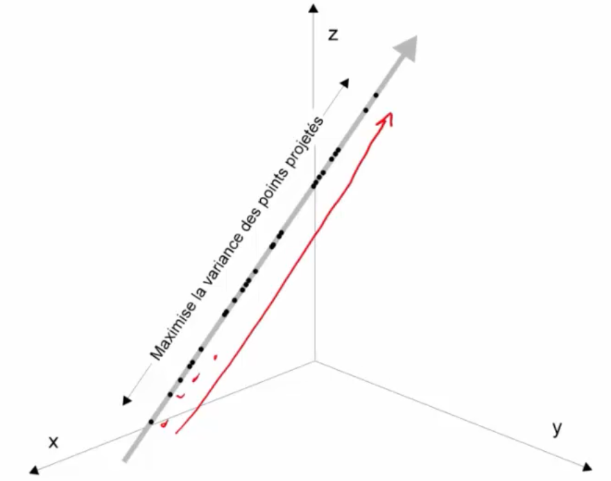
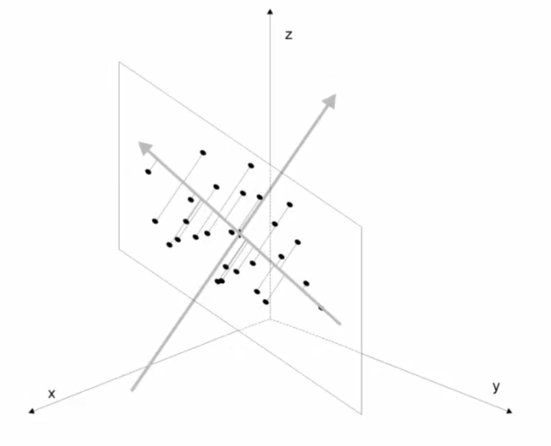
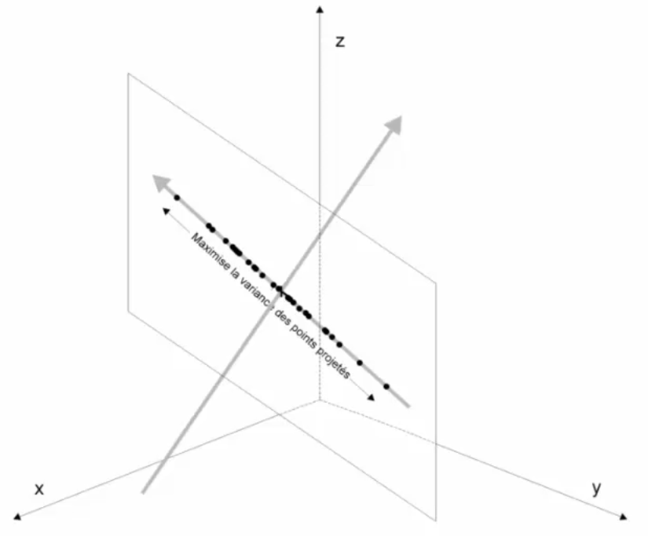
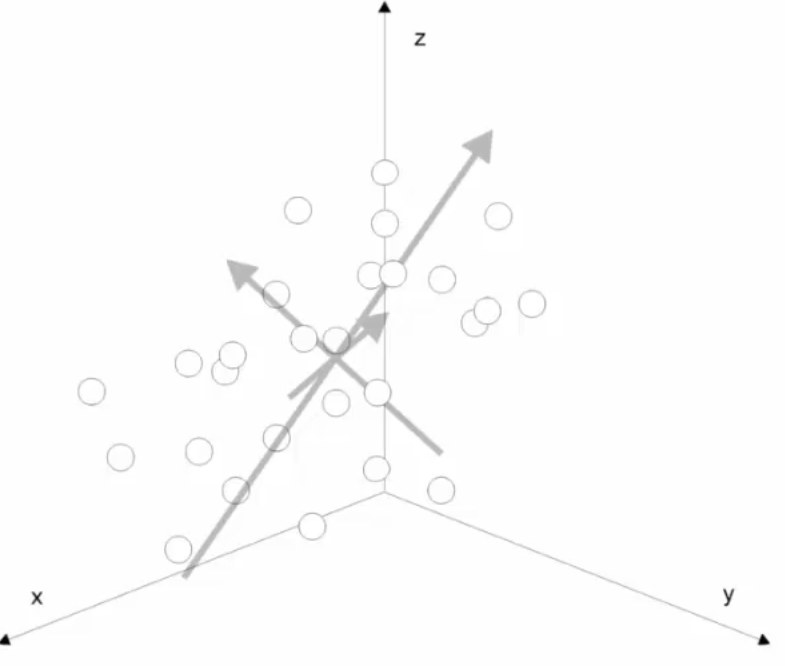

Objectif : voir en “moins de dimensions” (2D, 3D) ce qui se passe dans un espace à k dimensions
Une méthode : projeter dans un espace de dimension inférieure !
2 Principe des composantes principales
Mais réduction des dimensions = distorsion !
Une méthode : trouver une droite sur laquelle la variance des points projetés est la plus grande possible.
En gros : c’est la droite selon laquelle les points sont le plus étalés.
avec variance = dispersion des points autour de la moyenne
La droite qui maximise la variance des points projetés est la 1ère composante principale (PC1)

Ensuite :
prendre le plan perpandiculaire à la première composante principale
et projection des points sur le plan
On obtient un nouveau nuage de points sur ce plan
Ensuite on cherche la 1ère composante principale (ACP1) de ce nouveau plan : càd la droite par laquelle la variance des points projeté est maximale

On obtient les deux premières composantes principales.

Donc la 3e composante principale est celle qui est perpandiculaire aux 2 premières :

En résumé :
1ère composante principale (PC1) :
droite qui maximise la variance des points projetés (le nuage de points s’étire le plus possible)
et plan sur lequel le “pied” ou le “résidu” des points projetés est le plus petit possible (distance entre le point et sa projection sur la droite)
Et comme les points projetées ont un résidu faible, ils sont les plus proches possible des points d’origine
C’est donc ce qui déforme le moins
2ème composante principale (PC2) : droite perpendiculaire à PC1 qui maximise la variance des points projetés sur le plan perpendiculaire à PC1 (dans ce qui est perpandiculaire à PC1, PC2 est la droite selon laquelle les points sont le plus étirés)
3ème composante principale (PC3) : droite perpendiculaire à PC1 et PC2 qui maximise la variance des points projetés sur le plan perpendiculaire à PC1 et PC2
Si on représente les composantes principales dans une longueur qui correspond à la variance des points projetées, on obtient une boîte !
Questions :
Si jamais il y a deux droites pour lesquelles on obtient la même variance \(\rightarrow\) ça n’arrive jamais !
Algébriquement : on passe par des matrices à 3*3 car 3 dimensions qu’on diagonalise (diagonalisation = trouver les vecteurs propres et valeurs propres)
Vecteurs propres = directions des composantes principales
Valeurs propres = variances des points projetés sur les composantes principales
A la fin :
Retenir :
On a des points dans un espace à k dimensions
On cherche des droites (composantes principales) qui maximisent la variance des points projetés (directions selon lesquelles les points sont le plus étirés)
3 Utilisations en statistiques
Visualisation de données multidimensionnelles
Prendre les deux premières composantes principales (PC1 et PC2) et faire un graphique 2D
4 Plan sur lequel les points sont des variables plutôt que des sujets
En reprenant un dataframe classique :
X correspondent à des variables
Sujet
X1
X2
X3
X..
X40
S1
2
5
3
3
S2
4
3
6
6
S3
1
4
8
8
S…
S1000
1
4
8
2
Ici :
1000 points
Dans un espace à 40 dimensions
Si on projète sur le premier plan principal : projections sur 2 variables Z1 et Z2 (rajoutées dans le dataframe)
Si on renverse le jeu de données, ça donne un dataframe :
Variable
S1
S2
S3
…
S1000
X1
2
4
1
X3
3
6
8
X..
X40
3
6
8
Et donc ici :
40 points
Dans un espace à 1000 dimensions
et X1 est un point dans un espace à 1000 dimensions.
En réalité :
2 points dans un espace à 3 dimensions : 2 points sur une droite donc en réalité, 2 points dans un espace à 1 dimension
Idem dans 1000 dimensions : y a plein de dimensions qui ne servent à rien
NB : il faut “normaliser” = centrer et réduire les données avant de faire une ACP ! \(\rightarrow\) C’est à dire soustraire la moyenne et diviser par l’écart-type
Comme on normalise les variables :
Moyenne de Xi = 0
Ecart-type de Xi = 1 et variance de Xi = 1 (car variance = écart-type au carré)
*Pourquoi la moyenne = 0 ?
En soustrayant la moyenne de l’ensemble des valauers à chacune des valeurs, on centre les données autour de 0
Par exemple : 5 + 10 + 15 = 30 / 3 = 10 (moyenne) ;
et en soustrayant 10 à chaque valeur : -5 + 0 + 5 = 0
Mais pourquoi centrer et réduire ?
Si on ne centre pas et réduit pas : les variables avec la plus grande variance vont dominer les composantes principales
En centrant et réduisant : on met toutes les variables sur le même pied d’égalité
5 Représentation en sphère
Pourquoi, à la fin, les variables centrées-réduites forment une sphère dans l’ACP ?
Imaginons p variables (par exemple p = 40).
L’ACP cherche p composantes principales (PC1, PC2, …, PCp) : c’est à dire p nouvelles dimensions perpendiculaires entre elles.
Pour chaque variable d’origine (par ex “âge”, “créatinine”, “CRP”…), on peut mesurer dans quelle direction la variable pointe dans ce nouvel espace (c’est à dire dans quelle direction la variable “âge” pointe dans l’espace défini par les composantes principales).
Ces directions sont données par les corrélations entre la variable et chaque composante principale.
Exemple : - corr(age, PC1) = 0.8
corr(age, PC2) = 0.5
Alors la variable “âge” est représentée par la flèche allant (0.8, 0.5).
Représentation en sphère car les longueurs des flèches = 1
Variables centrées-réduites et avec longueur des flèches = variance
C’est un résultat direct du fait que l’ACP décompose entièrement la variance initiale.
Toutes les variables — sans exception — se transforment en flèches de longueur 1.
Elles ne peuvent donc exister que sur une surface dont tous les points sont à distance 1 du centre.
Pourquoi cette surface est une SPHÈRE (et un cercle quand en 2D) ?
Une sphère = ensemble des points dont la distance au centre = 1.
Exemples :
en 1D → deux points : –1 et +1
en 2D → un cercle
en 3D → une sphère
en p dimensions → une hypersphère
Comme toutes tes flèches ont une longueur = 1, leurs extrémités se trouvent toutes à distance 1 du centre.
Donc : dans l’espace complet (p dimensions) → c’est une hypersphère
library(psy)# Jeu de données fictif pour illustrationset.seed(123)df_fake <-data.frame(age =rnorm(100, 50, 10),rs =rnorm(100, 100, 15),ed =rnorm(100, 12, 2),dr =rnorm(100, 5, 1))# ACP plane (cercle)mdspca(df_fake)
Représentation en sphère des variables dans une ACP
# ACP sphérique (variables sur la sphère unité)sphpca(df_fake, v =55)
Représentation en sphère des variables dans une ACP
6 En d’autres termes :
Centration-réduction
Chaque variable est transformée pour avoir :
une moyenne = 0 (centrée)
une variance = 1 (réduction)
Cela garantit que toutes les variables ont le même poids dans l’ACP. Et surtout : la variance totale à “répartir” pour chaque variable est exactement 1. ⸻
L’ACP décompose cette variance
L’ACP fabrique des axes perpendiculaires entre eux (PC1, PC2, PC3…).
Chaque variable d’origine est représentée dans ce nouvel espace comme une flèche (un vecteur), dont les coordonnées sont les corrélations entre la variable et chaque composante principale.
La longueur de la flèche est égale à 1 (car variance = 1)
et les coordonnées de la flèche sont les corrélations entre la variable et chaque composante principale.
corr(X, PC1) ⟶ la position de la variable sur l’axe PC1
corr(X, PC2) ⟶ la position sur l’axe PC2
Relation entre variance et correlation :
Variance(X) = somme des corrélations² entre X et chaque composante principale
Si on représentait sur l’ensemble des composantes principales (mais c’est pas possible pour l’oeil humain), toutes corrélations seraient à 1.
Ce qu’on voit en 2D, c’est une projection partielle de cette sphère dans un plan.